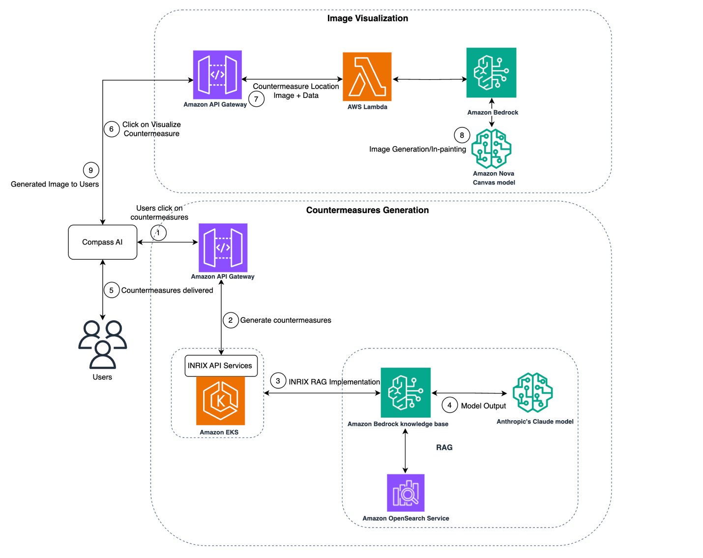
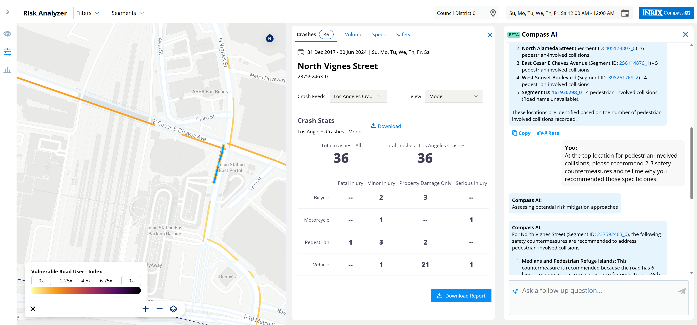
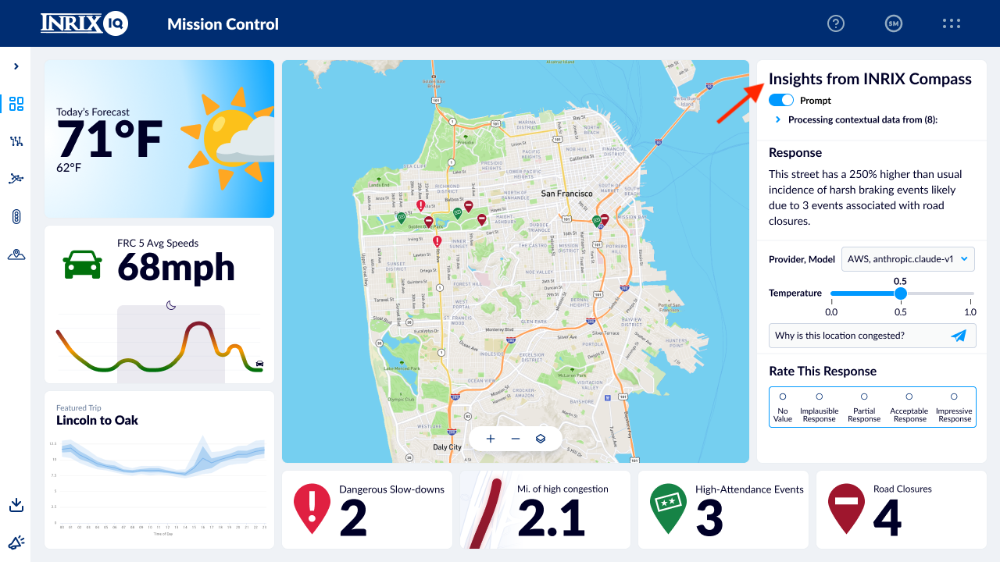

Sự phức tạp của quản lý giao thông hiện đại vượt xa phạm vi giám sát đường bộ đơn thuần, bao gồm khối lượng dữ liệu khổng lồ được thu thập trên toàn thế giới từ ô tô kết nối, thiết bị di động, cảm biến đường bộ và hệ thống giám sát sự kiện lớn. Đối với các cơ quan quản lý giao thông vận tải quản lý lưu lượng giao thông đô thị, ngoại ô và nông thôn, thách thức nằm ở việc xử lý và ứng phó hiệu quả với mạng lưới thông tin khổng lồ này. Nhiệm vụ này đòi hỏi phải cân bằng giữa các nhu cầu vận hành tức thời, chẳng hạn như chuyển hướng giao thông theo thời gian thực trong trường hợp xảy ra sự cố, với kế hoạch chiến lược dài hạn nhằm cải thiện khả năng di chuyển và an toàn.
Theo truyền thống, việc phân tích các mẫu dữ liệu phức tạp này và đưa ra những thông tin chi tiết hữu ích là một quá trình tốn kém nguồn lực, đòi hỏi sự hợp tác chặt chẽ. Với những tiến bộ gần đây trong generative AI, chúng ta có cơ hội chuyển đổi cách xử lý, hiểu và hành động dựa trên dữ liệu giao thông, cho phép các hệ thống quản lý giao thông hiệu quả và phản ứng nhanh hơn.
Trong bài viết này, chúng tôi đã hợp tác với INRIX - khách hàng của Amazon Web Services (AWS) để chứng minh cách sử dụng Amazon Bedrock để xác định các biện pháp đối phó tốt nhất cho các vị trí thành phố cụ thể bằng cách sử dụng dữ liệu giao thông phong phú, và cách các biện pháp đối phó đó có thể được tự động hiển thị trên hình ảnh chế độ xem phố. Phương pháp này cho phép tăng tốc đáng kể quá trình lập kế hoạch so với các phương pháp truyền thống sử dụng bản vẽ ý tưởng.
INRIX tiên phong trong việc sử dụng dữ liệu GPS từ các phương tiện kết nối cho mục đích thông tin giao thông. Trong hơn 20 năm qua, INRIX là công ty hàng đầu về dữ liệu và thông tin chi tiết về phương tiện và thiết bị kết nối dựa trên đầu dò, hỗ trợ các ứng dụng trong lĩnh vực ô tô, doanh nghiệp và khu vực công. Các sản phẩm của INRIX đa dạng, từ các tập dữ liệu được mã hóa để hỗ trợ quyết định đầu tư cho lĩnh vực dịch vụ tài chính đến các bản sao số cho quyền sử dụng đường công cộng tại các thành phố Philadelphia và San Francisco. INRIX là công ty đầu tiên phát triển mạng lưới giao thông cộng đồng, và họ tiếp tục dẫn đầu trong các hoạt động di chuyển theo thời gian thực.
Vào tháng 6 năm 2024, Sở Giao thông Vận tải Tiểu bang California (Caltrans) đã chọn INRIX để chứng minh khái niệm cho một giải pháp AI sinh học nhằm cải thiện an toàn cho người tham gia giao thông dễ bị tổn thương (VRU). Đề xuất vấn đề này nhằm khai thác sự kết hợp giữa dữ liệu tài sản, tai nạn và điểm quan tâm (POI) của Caltrans và kho dữ liệu 50 petabyte (PB) của INRIX để dự đoán các vị trí có nguy cơ cao và nhanh chóng tạo ra các biện pháp an toàn được kiểm chứng thực nghiệm nhằm giảm thiểu nguy cơ tai nạn. Được đào tạo dựa trên dữ liệu thời gian thực và dữ liệu lịch sử, cùng với nghiên cứu và hướng dẫn của ngành, giải pháp này cung cấp một phương pháp luận mới, dựa trên an toàn, mang tính hệ thống để đánh giá rủi ro, ưu tiên vị trí và triển khai dự án.
INRIX đã công bố INRIX Compass vào tháng 11 năm 2023. INRIX Compass là một ứng dụng khai thác trí tuệ nhân tạo (AI) và kho dữ liệu 50 PB của INRIX để giải quyết các thách thức về giao thông. Giải pháp này sử dụng các biện pháp đối phó của INRIX Compass làm đầu vào, AWS serverless architecture, và Amazon Nova Canvas làm công cụ trực quan hóa hình ảnh. Các thành phần chính bao gồm:
Sơ đồ sau đây cho thấy kiến trúc của INRIX Compass.

Bằng cách sử dụng INRIX Compass, người dùng có thể đặt các truy vấn ngôn ngữ tự nhiên như, Where are the top five locations with the highest risk for vulnerable road users? và Can you recommend a suite of proven safety countermeasures at each of these locations?. Hơn nữa, người dùng có thể tìm hiểu sâu hơn về các đặc điểm đường bộ góp phần gây ra các yếu tố rủi ro và tìm các vị trí tương tự trong mạng lưới đường bộ đáp ứng các điều kiện đó. Compass AI sử dụng các mô hình nền móng (FM) được hỗ trợ bởi RAG và Amazon Bedrock để truy vấn mạng lưới đường bộ nhằm xác định và ưu tiên các vị trí có yếu tố rủi ro hệ thống và các mô hình an toàn bất thường. Giải pháp này cung cấp các khuyến nghị ưu tiên cho các giải pháp vận hành và thiết kế cũng như các biện pháp ứng phó dựa trên kiến thức chuyên ngành.
Hình ảnh sau đây hiển thị giao diện của INRIX Compass.

Việc tạo ra các đề xuất biện pháp đối phó là giai đoạn đầu tiên trong quy hoạch giao thông. Việc hình ảnh hóa đòi hỏi bước tiếp theo quan trọng là chuẩn bị bản vẽ ý tưởng. Quá trình này thường tốn nhiều thời gian do sự tham gia của nhiều nhóm chuyên môn, bao gồm:
Các nhóm này làm việc cộng tác, tạo ra và tinh chỉnh liên tục các hình ảnh trực quan khác nhau dựa trên phản hồi từ các nhà thiết kế đô thị và các bên liên quan khác. Mỗi chu kỳ lặp lại thường bao gồm nhiều vòng đánh giá, điều chỉnh và phê duyệt, thường kéo dài đáng kể thời gian. Độ phức tạp càng tăng thêm bởi các quy tắc và yêu cầu thiết kế riêng của thành phố, thường đòi hỏi sự tùy chỉnh đáng kể. Ngoài ra, các quy định địa phương, cân nhắc về môi trường và phản hồi của cộng đồng phải được đưa vào quy trình thiết kế. Do đó, quy trình dài dòng và tốn kém này thường dẫn đến sự chậm trễ trong việc triển khai các biện pháp đối phó an toàn. Để đơn giản hóa thách thức này, INRIX đã tiên phong áp dụng một phương pháp tiếp cận sáng tạo cho giai đoạn trực quan hóa bằng cách sử dụng công nghệ AI tạo sinh. Giải pháp nguyên mẫu này cho phép lặp lại nhanh chóng các bản vẽ ý tưởng, có thể được nhiều nhóm khác nhau xem xét một cách hiệu quả, giúp rút ngắn chu kỳ thiết kế từ vài tuần xuống còn vài ngày. Hơn nữa, hệ thống kết hợp phương pháp học tập theo từng lần với hình ảnh tham chiếu và các gợi ý được thiết kế cẩn thận, cho phép tích hợp liền mạch các yêu cầu riêng của thành phố vào kết quả đầu ra. Phương pháp này không chỉ đẩy nhanh quá trình thiết kế mà còn hỗ trợ tính nhất quán giữa các dự án khác nhau, đồng thời vẫn tuân thủ các tiêu chuẩn địa phương.
Hình ảnh sau đây hiển thị thông tin chi tiết về tình trạng tắc nghẽn của INRIX Compass.

INRIX đã phát triển và tạo nguyên mẫu giải pháp này bằng cách sử dụng các mô hình Amazon Nova. Amazon Nova Canvas cung cấp khả năng xử lý hình ảnh tiên tiến thông qua khả năng tạo văn bản thành hình ảnh và chuyển đổi hình ảnh thành hình ảnh. Mô hình này cung cấp các điều khiển tinh vi để điều chỉnh bảng màu và thao tác bố cục nhằm đạt được kết quả hình ảnh mong muốn. Để thúc đẩy việc triển khai responsible AI, Amazon Nova Canvas tích hợp các biện pháp an toàn, bao gồm hệ thống đóng dấu bản quyền và kiểm duyệt nội dung.
Mô hình này hỗ trợ một loạt các thao tác chỉnh sửa hình ảnh toàn diện. Các thao tác này bao gồm tạo hình ảnh cơ bản, xóa đối tượng khỏi hình ảnh hiện có, thay thế đối tượng trong cảnh, tạo biến thể hình ảnh và chỉnh sửa nền hình ảnh. Tính linh hoạt này giúp Amazon Nova Canvas phù hợp với nhiều ứng dụng chuyên nghiệp đòi hỏi chỉnh sửa hình ảnh phức tạp.
Các hình ảnh mẫu sau đây là ví dụ về hình ảnh hóa biện pháp đối phó.
Amazon Nova Canvas tích hợp với các khả năng phân tích ngôn ngữ tự nhiên hiện có của INRIX Compass. Hệ thống Compass ban đầu tạo ra các khuyến nghị đối phó dựa trên văn bản dựa trên:
Việc triển khai tuân theo quy trình hai giai đoạn để trực quan hóa các biện pháp đối phó giao thông. Ban đầu, hệ thống sử dụng chức năng tạo hình ảnh để tạo ra các biểu diễn chế độ xem phố tương ứng với tọa độ kinh độ và vĩ độ cụ thể nơi các biện pháp can thiệp được đề xuất. Sau khi tạo hình ảnh ban đầu, khả năng “in-painting” cho phép đặt chính xác các biện pháp đối phó trong bối cảnh chế độ xem phố đã tạo. Phương pháp tuần tự này cung cấp khả năng trực quan hóa chính xác các thay đổi được đề xuất trong bối cảnh địa lý thực tế.
Sự hợp tác giữa INRIX và AWS cho thấy tiềm năng chuyển đổi của AI trong việc giải quyết các thách thức phức tạp về giao thông. Bằng cách sử dụng Amazon Bedrock FM, INRIX đã biến hồ dữ liệu khổng lồ 50 PB của mình thành những thông tin chi tiết hữu ích thông qua các giải pháp trực quan hóa hiệu quả. Bài viết này chỉ nêu bật một trường hợp sử dụng giao thông cụ thể, nhưng Amazon Bedrock và Amazon Nova hỗ trợ một loạt các ứng dụng, từ tạo văn bản đến tạo video. Sự kết hợp giữa dữ liệu phong phú và khả năng AI tiên tiến tiếp tục mở đường cho các hệ thống giao thông thông minh hơn, hiệu quả hơn trên toàn thế giới.
Để biết thêm thông tin, hãy xem tài liệu về Amazon Nova Foundation Models, Amazon Bedrock và INRIX Compass.